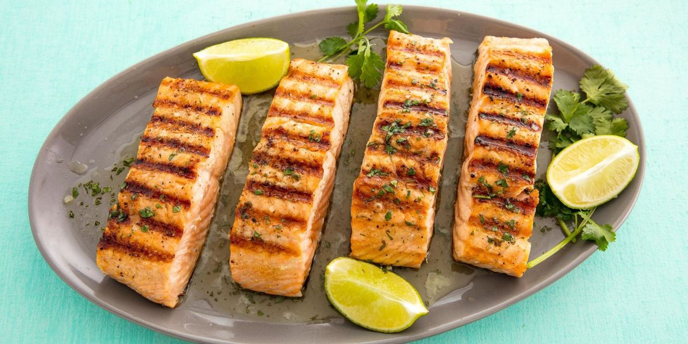

Girl Eats World

Recipe
Ingredients:
Dressing
– 2 Tbsp extra- virgin olive oil
– 2 Tbsp freshly squeezed lemon juice
– 1 Tbsp red wine vinegar
– 1 tsp Dijon mustard
– 1/2 tsp pure maple syrup
– 1/4 tsp salt
– Freshly cracked pepper (to taste)
Salad
– 3 Tbsp extra- virgin olive oil
– 2 cloves garlic, minced
– 2 398 mL cans chickpeas, drained and rinsed
– 1 tsp ground cumin
– 1/4 tsp ground turmeric
– 1/4 tsp ground coriander
– 1/4 cup chopped sundried tomatoes, packed in oil and
patted dry
– 1/2 tsp salt
– 2 cups lightly packed fresh flat-leaf parsley
– 2 cups tightly packed baby spinach, sliced into
thin ribbons
– 1 cup yellow or red cherry tomatoes, halved
– 1/3 cup raw walnut pieces
Method
1. For the dressing, whisk together the olive oil,
lemon juice, red wine vinegar, mustard, maple syrup,
salt, and pepper to taste in a small bowl. Set aside.
2. Heat the olive oil in a medium skillet
over medium heat. Add the garlic and stir for 1 minute.
3. Add the chickpeas, stirring occasionally until
they appear to absorb the oil in the skillet,
3 to 4 minutes.
4. Add the cumin, turmeric, and coriander and
stir to coat, about 30 seconds.
5. Remove from the heat and stir in the
sundried tomatoes and salt.
6. In a large bowl, toss together the parsley,
spinach, tomatoes, and walnuts with the roasted chickpeas
and dressing. Taste and adjust seasoning, if necessary.
Serve warm or chilled. Serves 3 to 6.